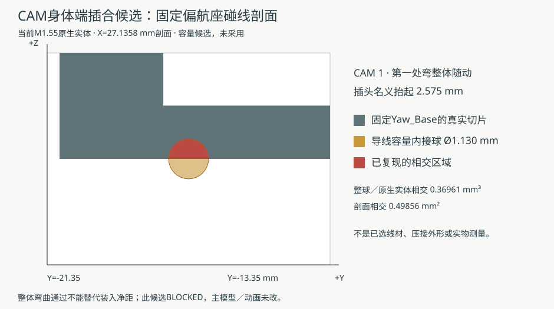

2026-10-10。主模型 M1.55、装配动画 M1.55-A1；以下线束研究未采用。硬件合同保持 P5R7。
完整线束：BLOCKED。七条已知参考的名义运行检查已完成，实际材料、接口、裁线和完整带线装配仍未完成。局部 PASS 不等于实物或制造资格。
使用的是名义几何与分段线径分配。它们不定义真实粗细线接续、实际压接、夹持或可下发的裁线尺寸。三条头舵机和两条喇叭参考尚缺完整上段，不能据此称整束通过。
| 研究方式 | 实际结果 | 不能据此推出 |
|---|---|---|
| 裸 PH 端子容量路径 | 两种容量框、6,090 个连续区间通过；未采用真实压接／保护／附线。 | 真实带线逐根装入、操作空间或完整装配通过。 |
| 身体前段预铺后装驱动座 | 12 条参考均在已检装入路径与 Pitch_Yoke 相交，未采用。 | 所有临时软线整理方法都不可能。 |
| 整束随头部搬入 | 19 个已知参考段检查；10 条身体前段与 Yaw_Base 相交，未采用。 | 缺失的五条上段已被覆盖，或数学切点等于实际自由端。 |
| PHR-4 外形容量与带线插合 | 外形容量框通过；五种固定头端提线候选均有 Yaw_Base 净距失败，20 处独立复现。 | 容量框定义了内腔、实际插深、压接或握持。 |
| 先端接身体、再装承重桥 | 原路径及直落候选各 19 处失败；38 处独立复现为 36 容量管相交、2 规划净距不足，未采用。 | 其他有真实自由端的分步穿线／临时整理方法已被排除。 |

图为有限候选姿态下的容量管与原生实体剖面。容量线径没有成为最终线材选型，图示不是实物相撞的测量记录。
喇叭壳体出口至现有插头末端 150 mm 已由用户报告，含插头。插头尺寸待补充；舵机附件和微雪排线按用户决定到货后核对；CAM 供电源端仍待正式硬件交接。询问稿没有发送。
包内有数值记录、脚本、日志和原页面快照；保留原日期和失败结果。二进制缓存、比较 Blender、图片和第三方原始载荷仍在本地，本包不是完整可执行备份。页面快照中的历史链接也不代表当前公开入口。恢复后读取记录，不应跳过缺失输入而声明重现 PASS。